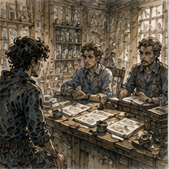
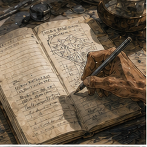

Rent took less time than deciding to pay rent.
I gave the keeper the money after breakfast.
She counted it once.
I watched.
She looked up.
“What?”
“Nothing.”
“You're watching me count.”
“Yes.”
“Why?”
“Because it is money.”
“You think I steal?”
“Yes.”
She nodded. “Fair.”
Then she put the coins away and handed me a folded scrap of paper.
I looked at it.
“What is this?”
“Guild.”
That was not an answer.
The paper had my name on one side.
GREGORY.
Under it, in smaller writing:
IF HE COMES BY, ASK HIM TO WAIT.
No signature.
No task.
No rate.
No explanation.
I turned it over.
Blank.
“When did this arrive?”
“Morning.”
“Who brought it?”
“Boy.”
“Which boy?”
“One with legs.”
I looked at her.
She looked at me.
“That was unnecessary.”
“I thought it narrowed it.”
“It did not.”
I put the note in my pocket.
I did not leave immediately.
This was deliberate.
Possibly petty.
Mostly I wanted another piece of bread.
The Guild was busy when I arrived.
Not dramatic busy.
Ordinary busy.

The front hall had six people waiting, two people arguing, one person pretending not to argue while speaking louder than everyone else, and Merrin behind the front desk with three stacks of paper arranged in the particular order of someone who would know if another person moved one sheet half an inch.
He saw me.
“Good.”
“That is unusually welcoming.”
“Sit.”
There was a stool behind the side end of the desk.
I looked at it.
Then at him.
“No.”
“Yes.”
“What am I doing?”
“Nothing.”
“That is rarely paid.”
“It isn't.”
“Then I object more strongly.”

Merrin took a ledger from under the desk.
A man at the front of the line said, “I've been here twenty minutes.”
Merrin said, “Then you know how the line works.”
The man stopped speaking.
Useful skill.
Merrin pointed at the stool.
“I need to go upstairs.”
“For what?”
“Not your business.”
“Then why am I involved?”
“You aren't.”
“This is becoming circular.”
“Sit there. If anyone asks where I am, say upstairs. If anyone hands you anything, do not accept it. If anyone wants a decision, you cannot make one. If anyone says they were told something, tell them to wait.”
“How long?”
“Ten minutes.”
“That is suspiciously specific.”
“Greg.”
I sat.
Merrin left.
The line looked at me.
I looked at the line.
This was a mistake.
Not mine.
Yet.
The stool was acceptable.
No back.
Too high for my left knee to rest comfortably without the residual limb hanging, so I shifted sideways and planted my right foot. Both crutches fit against the desk within reach.
The first man stepped forward.
“I need a replacement token.”
“I cannot make decisions.”
“It isn't a decision.”
“Then why do you need the Guild?”
He stared at me.
I reconsidered.
“Wait for Merrin.”
“Where is he?”
“Upstairs.”
“How long?”
“Approximately ten minutes.”
The man looked at the stairs.
Then at me.
“You new?”
“No.”
“Clerk?”
“No.”
“What are you?”
“Temporarily seated.”
The woman behind him laughed.
He did not.
He stepped aside.
The woman came forward.
“I was told to leave this.”
She held out a sealed envelope.
I did not take it.
“Wait for Merrin.”
“I don't need Merrin. I need to leave this.”
“I was specifically told not to accept anything.”
“With you?”
“Yes.”
“Why?”
“I assume experience.”
She looked at the envelope.
Then at me.
Then tucked it back under her arm.
“Fine.”
Good.
Two people successfully not helped.
The third person was easier.
“Where's Merrin?”
“Upstairs.”
“Fine.”
He left.
Excellent.
I began to understand clerical work.
The fourth person ruined it.
He was carrying a wooden tally board with six small brass tags clipped along one edge.
“I need Bay Three released.”
“I cannot make decisions.”
“Merrin already released it.”
“Then it is released.”
“He didn't mark it.”
“Then wait for Merrin.”
“The cart is outside.”
“Still wait.”
“The driver's charging.”
“That sounds unfortunate.”
He stared at me.
I could see the problem.
That was dangerous.
Bay Three was one of the covered receiving bays on the east side. I knew enough about Guild traffic to know that holding a cart outside cost money and blocked street space. If Merrin had actually approved the release and merely failed to mark the board, waiting ten minutes was pointless.
I also knew Merrin had told me not to make decisions.
Very clear.
Almost offensively clear.
The man put the tally board on the desk.
“Look. Vale consignment. Empty return crates. Nothing sealed.”
I looked.
That was also dangerous.
The tags were ordinary brass.
One marked VALE.
One marked RETURN.
One marked BAY 3.
The rest meant less to me.
“If Merrin released it,” I said, “why are you here?”
“Because the yard won't open the chain without the mark.”
“Correctly.”
“Yes.”
“So wait.”
He exhaled through his nose.
“Fine.”
He moved aside.
I felt good.
This lasted eleven seconds.
A girl came through the front door carrying a basket of folded cloth.
Not a child.
Younger than me, probably.
She looked at the line, looked at me, and said, “Where do I put Guild wash?”
I had no idea.
I could infer.
That was worse.
“Wait for Merrin.”
She stared at me.
“With wet cloth?”
I looked at the basket.
It was not wet.
“Is it wet?”
“No.”
“Then yes.”
She stared longer.
“Who are you?”
“Temporarily seated.”
The woman with the envelope laughed again.
The girl put the basket on the floor and sat on it.
Fine.
The next man wanted to know whether a Bronze named Tavin had checked in.
I knew Tavin.
I did not know whether he had checked in.
“Wait for Merrin.”
“Can you look?”
“No.”
“You're behind the desk.”
“That has proven misleading.”
“Ledger's right there.”
He pointed.
The ledger was right there.
I looked at it.
Merrin had not told me not to look at the ledger.
He had told me not to accept things or make decisions.
Looking was not deciding.
I reached toward it.
Then stopped.
The man watched my hand.
I thought of Octavia.
Not because this was performance.
Because being watched altered the decision.
If I opened the ledger, I would know whether Tavin had checked in.
Possibly.
If the ledger was current.
If I read the right column.
If Tavin used the same registry for whatever this man meant by checked in.
Knowledge would arrive faster than authority.
That was familiar.
I put my hand back.
“Wait for Merrin.”
The man sighed.
Good.
I was excellent at this.
Then the front door opened and Jorren came in.
He saw me behind the desk.
Stopped.
Looked at the line.
Looked back at me.
“No.”
“I agree.”
“What happened?”
“Merrin went upstairs.”
“And left you?”
“Yes.”
Jorren looked toward the ceiling.
“He's brave.”
“I have made no decisions.”
The Bay Three man said, “He won't even make the one already made.”
Jorren looked at him.
Then at me.
“What one?”
“Do not assist.”
“I wasn't.”
“You were about to.”
“I was not.”
Jorren smiled.
I disliked him.
He moved to the side wall and leaned against it.
“What do you need?” I asked.
“Nothing.”
“Then why are you here?”
“Now? This.”
He folded his arms.
Spectator.
Traitor.
The line advanced through attrition rather than service.
One person left.
Two more arrived.
A woman asked whether the Guild bought damaged spearheads.
“Wait for Merrin.”
A man asked whether the east yard was open.
I knew it was.
I had seen carts entering when I arrived.
“Yes.”
He thanked me and left.
Jorren said, “Decision.”
“That was observation.”
“You answered.”
“He asked a factual question.”
“What if the yard closed after you came in?”
I looked toward the door.
It had been perhaps fifteen minutes.
No.
Twelve.
Maybe.
“Then I would be wrong.”
“Yes.”
“That does not make it a decision.”
“Feels like one if he gets there and it's shut.”
I hated this.
The girl sitting on the wash basket said, “East yard's open.”
“Thank you.”
“My sister's there.”
“Excellent.”
Jorren nodded. “Now you have a source.”
“I had a source.”
“You had a memory.”
I looked at him.
“Why are you here?”
He smiled.
I looked away.
Merrin still had not returned.
Ten minutes had become something else.
I considered going upstairs.
Impossible.
Not physically impossible.
Administratively impossible.
Leaving the desk defeated the purpose of being at the desk.
Also stairs.
No.
The Bay Three man tapped his tally board.
“Cart's still charging.”
“I know.”
“You could send someone upstairs.”
I looked at the line.
No one volunteered.
Jorren remained useless.
“Go get him,” I said.
The Bay Three man blinked.
“Me?”
“Yes.”
“I can't go upstairs.”
“Why?”
“Yard boots.”
I looked down.
Mud.
Substantial mud.
Guild front hall had rules about that.
Fine.
I looked at Jorren.
“No,” he said.
“I did not ask.”
“You looked.”
“That is apparently legally binding now.”
The woman with the envelope said, “I'll go.”
I looked at her shoes.
Clean.
“Good.”
She started toward the stairs.
Then stopped.
“Can I leave this with you while I go?”
She held out the envelope.
“No.”
She laughed.
“Worth trying.”
She went upstairs carrying it.
This was delegation.
Probably.
I had not made a decision about Guild business.
I had made a decision about who could climb stairs.
No.
She had volunteered.
Important distinction.
The front door opened again.
A man came in fast enough that the room changed.
Not running.
Purposeful.
He went straight to the desk.
“Who has west shed keys?” he asked.
I did not know.
“Wait for Merrin.”
“Can't.”
“Why?”
“Latch broke. Door's swinging into the lane.”
That was different.
“How bad?”
“Bad enough I came inside.”
Useful scale.
“Is anyone holding it?”
“Yes.”
“Then wait.”
“They need the keys.”
I looked around.
Everyone was looking at me.
Of course.
I could solve this.
Not the latch.
The information.
Keys had locations.
People knew locations.
The Guild was a system.
I knew enough of it to route a question.
Merrin upstairs.
Yard staff outside.
Jorren standing against wall because he was a bad person.
“Jorren.”
“No.”
“This is not clerical.”
“What is it?”
“Door.”
He looked at the man.
“West shed?”
“Yes.”
“Keys hang in the yard office.”
The man turned.
Then paused.
“Which hook?”
Jorren shrugged. “Ask yard.”
The man left.
Solved.
Not by me.
Annoying.
I felt the shape of the error before I knew what it was.
I had assumed the front desk was the information center because the desk looked like the center.
Jorren knew because he worked here.
The yard knew because they used the keys.
Merrin might not have been necessary at all.
The next person stepped forward.
I held up a hand.
“Before you speak, is there someone other than Merrin who actually owns your problem?”
The man considered.
“Probably.”
“Excellent.”
He left.
Jorren laughed.
“This is much better.”
“I am improving throughput.”
“You're sending everyone away.”
“Those can be identical under certain conditions.”
The girl on the wash basket raised her hand.
I pointed at her.
“Who owns wash?”
“Kitchen.”
“Why are you here?”
“Kitchen told me front hall.”
“Why?”
She shrugged. “They don't want the basket in the kitchen.”
I stared.
System failure.
Or family dynamics.
Impossible to distinguish.
“Wait for Merrin.”
She lowered her hand.
The woman returned from upstairs.
“Merrin says he's coming.”
“Did he say when?”
“No.”
“Did you ask?”
“No.”
I closed my eyes.
She put the envelope on the desk.
I opened my eyes.
“No.”
“You didn't accept it.”
“It is touching the desk.”
“Not your hands.”
“That is not the standard.”
“What standard?”
“Merrin's.”
“He said don't accept it?”
“Yes.”
“You didn't.”
I looked at the envelope.
Then at her.
She smiled.
Octavia had contaminated the population.
I did not touch it.
Merrin returned three minutes later.
He came down the stairs carrying a narrow ledger and looking more annoyed than when he left.
He stopped at the bottom.
Looked at the line.
Looked at me.
Looked at the envelope.
“I didn't accept it,” I said.
The woman said, “True.”
Merrin picked it up.
He looked at the Bay Three tally board.
“Why is this still here?” Merrin asked.
The man made a sound I would have enjoyed if it were not aimed partly at me.
“You told me not to make decisions.”
“I released Bay Three before I went upstairs.”
“He said that.”
“So?”
“You didn't mark it.”
Merrin stared at me.
I stared back.
“Could I have marked it?”
“No.”
“Could I have told the yard to release it?”
“No.”
“Then why are you looking at me like that?”
“Because you could've sent him to Dena.”
I stopped.
“Dena can mark it?”
“She owns bay board when I'm off desk.”
I looked at the Bay Three man.
He looked exhausted.
“Did you know that?” I asked.
“Yes.”
“Why didn't you go to Dena?”
“She was in south yard.”
“Why didn't you say that?”
“You didn't ask.”
I looked at Jorren.
He was enjoying himself too much.
Merrin marked the board.
The man took it and left at speed.
Merrin pointed at the wash basket.
“Kitchen.”
“They sent her here.”
Merrin looked at the girl.
“Why?”
“Cook says front hall keeps losing cloth.”
Merrin's face changed.
Not much.
Enough.
“Put it behind the counter.”
I moved my crutch.
The girl slid the basket behind the counter.
Done.
Merrin handled the replacement token in less than a minute.
The damaged spearhead question went to stores.
The Tavin question went to a different registry, not the ledger I had almost opened.
Good.
Very good.
The east yard was still open.
I retained that victory.
Within six minutes, the line was gone.
Merrin sat in his chair.
I remained on the stool.
Jorren remained against the wall.
“Why did you need me?” I asked.
Merrin opened the narrow ledger.
“Because someone had to tell people I was upstairs.”
“That did not require this.”
I gestured at the desk.
“You made it require this.”
“I followed your instructions.”
“Mostly.”
“I made no decisions.”
“You sent a woman upstairs.”
“She volunteered.”
“You told a man to find someone who owned his problem.”
“That was excellent.”
“It was.”
I paused.
“Really?”
“Yes.”
That was suspicious.
Merrin wrote something.
“What?”
“Nothing.”
“What are you writing?”
“Work.”
“About me?”
“No.”
I leaned.
He closed the ledger.
“Greg.”
“Fine.”
I sat back.
My right shoulder was fine.
My right thigh had stiffened from the high stool.
The residual limb did not like hanging, so I had kept the knee bent and shifted sideways for most of the time. Not painful. Not ideal.
I stood carefully.
Crutches under arms.
No.
Not under arms.
Hands.
Always hands.
I had corrected that enough times in my head that it had become irritating.
Jorren pushed off the wall.
“You done clerking?”
“I was never clerking.”
Merrin said, “Correct.”
“Thank you.”
“You'd be terrible.”
I looked at him.
“You left me there.”
“For ten minutes.”
“It was thirty.”
“Twenty-seven.”
“That is not better.”
“Upstairs took longer.”
“What was upstairs?”
“Not your business.”
Still.
Good.
I liked that less than I respected it.
I looked at the empty front hall.
There was an obvious conclusion available.
Something about knowing the system from the outside versus knowing who held authority inside it.
Something about desks creating false centers.
Something about questions belonging to people before they belonged to procedures.
Something about how quickly I had wanted to become useful when my assigned task had been to say one sentence and wait.
All true.
Probably.
I did not need all of them.
“What do I get?” I asked.
Merrin looked up.
“For what?”
“Twenty-seven minutes.”
“You sat.”
“I performed queue control.”
“You obstructed queue control.”
“I prevented unauthorized decisions.”
“By you.”
“Exactly.”
Jorren said, “Pay him.”
Merrin looked at him.
“Why?”
“I want to see what number he argues with.”
I considered this.
“Never mind.”
Jorren's face fell.
Excellent.
I turned toward the door.
Merrin said, “Greg.”
I looked back.
He tossed something.
Bad choice.
My right hand was on the crutch.
My left hand was also occupied.
The object hit my chest and dropped.
I stared at the floor.
One copper bit.
Jorren started laughing.
Merrin said, “Substitute clerk.”
“I was not a clerk.”
“Then give it back.”
I bent badly.
Stopped.
No.
I was not picking a copper off the floor while holding two crutches with two people watching.
Jorren picked it up.
He held it out.
I took it.
“Thank you.”
He nodded.
Merrin had already returned to his ledger.
I put the bit in my pocket.
One bit was not enough to matter.
That was not the point.
I had been paid for sitting somewhere I did not belong, answering almost nothing, and eventually learning to redirect questions toward people who knew more than I did.
There were worse professions.
I went outside.
The east yard was still open.
I checked.